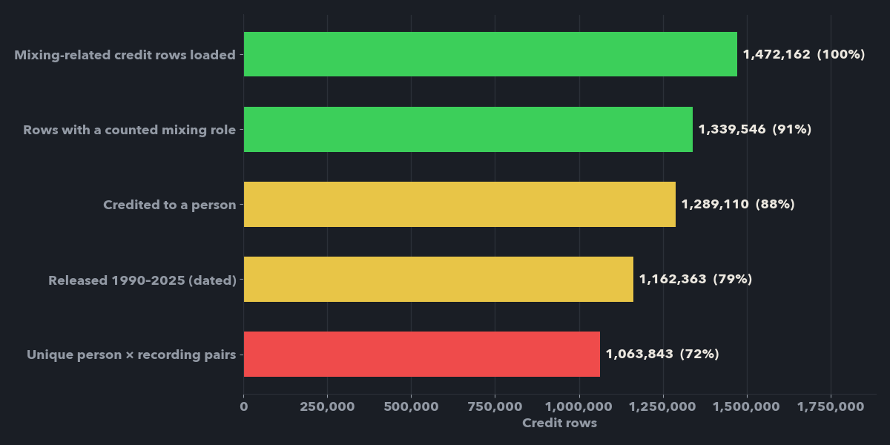
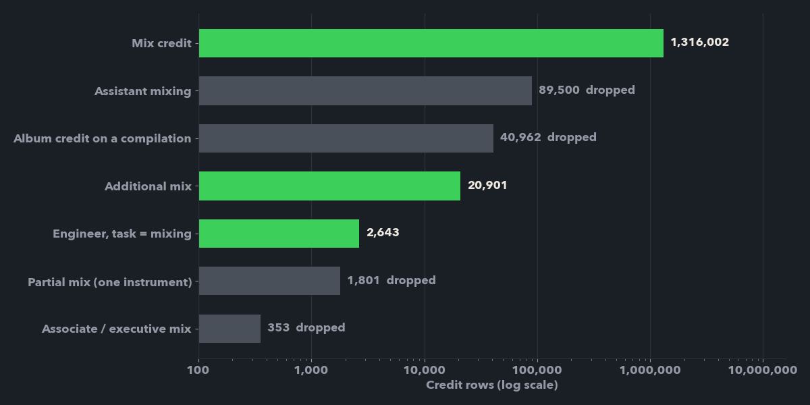
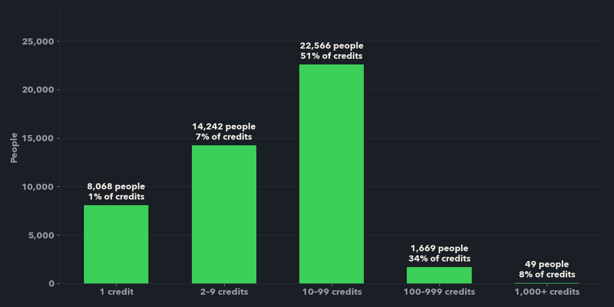
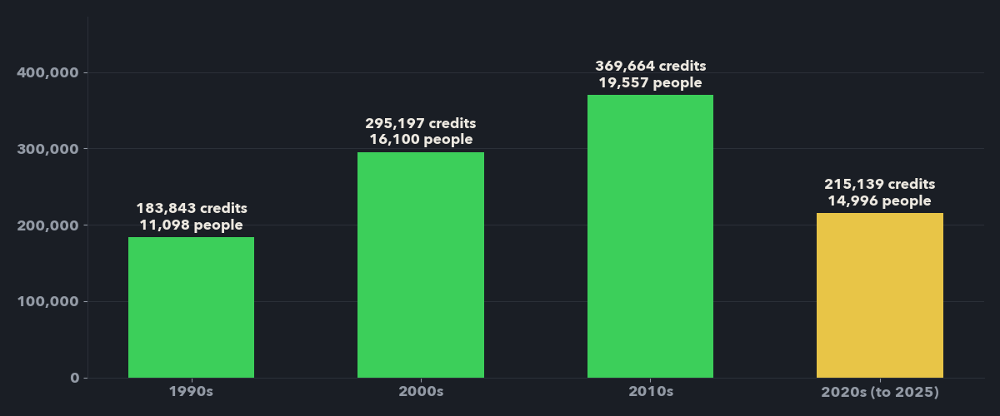
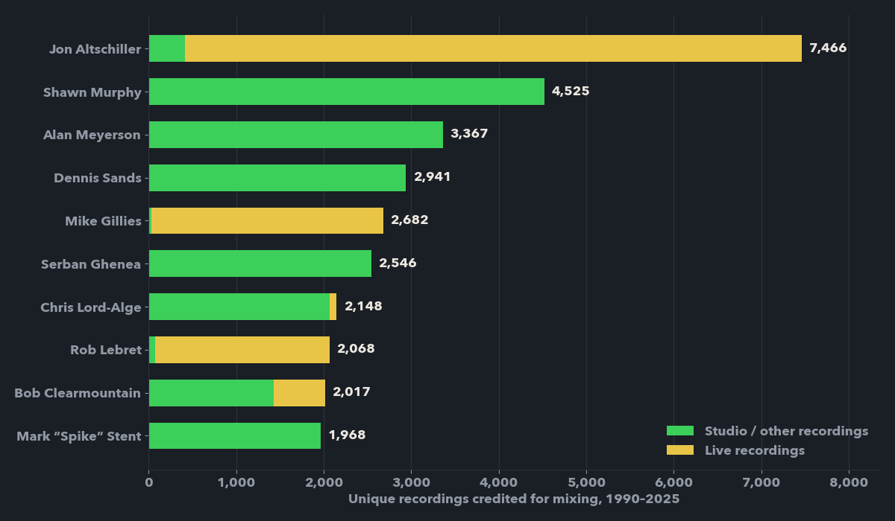
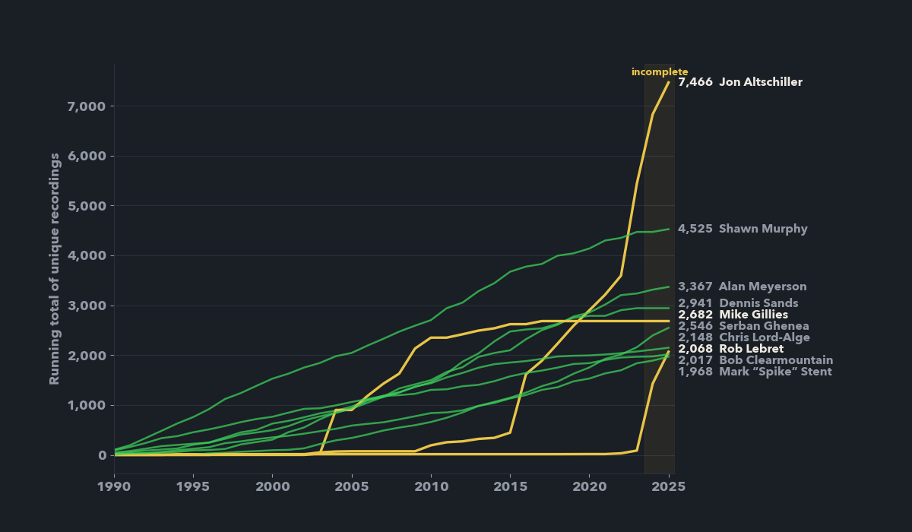

Brief
Which audio mixing engineers have the most documented mixing credits from 1990 to 2025, across every genre, and how did their careers rise and peak? The rules were strict: no assuming the famous names are the answer, keep mixing separate from mastering, recording and production, never treat missing data as zero, and label the result for what it is: a ranking of documented credits in one community database, not of every mix ever made. The output is an animated bar-chart race, an interactive dashboard and a reproducible pipeline.
The result
A 1:47 data film built from the final dataset: an LED-meter bar race of credits per year, cumulative career lines that draw themselves, final standings and the method. The score is original and synced in code, with a kick on every year change.
Watch on YouTube ↗ Open the interactive dashboard ↗
Gathering the data
I started with a pilot instead of a bulk download: five mixers across pop, rock, R&B, country and alternative, pulled from the MusicBrainz and Discogs APIs through a client with rate limiting (1 request per second), retries with back-off and an on-disk cache so every rerun is deterministic. The pilot answered the key design questions. MusicBrainz stores mixing as its own relationship type, separate from mastering and remixing. Some mixing credits hide inside generic "engineer" credits whose free-text task says "Mixing". And album-level credits made up as much as 56% of one mixer's rows.
It also showed the limit of the API: it cannot list every person with a mixing credit, so any top 10 built from it would just rank the names I chose. To build the candidate pool from data, I downloaded the full 7.6 GB MusicBrainz export (MD5-verified), extracted only the 25 tables needed, and streamed them with pandas in chunks, with no database server. Joining relationship, link-type and attribute tables gave every artist→recording and album-level mix credit in the database: 1,472,162 credit rows for 58,859 artists.
Cleaning
Every rule lives in one small, unit-tested module (26 tests) so the API pilot and the full build clean data the same way.
- Role filter. Kept mix credits, "additional" mixes and engineer credits whose task names mixing. Dropped assistant mixing (89,500 rows), partial mixes limited to one instrument, associate/executive credits, and album credits on compilations, which would otherwise credit every track on a hits collection.
- Dates. Year = the earliest dated release containing the recording, from country-specific and unknown-country release dates. Partial dates are handled; a missing date is never a zero.
- Duplicates. Union-find grouping per mixer on shared recording ID, shared ISRC, or matching title + artist + length within 3 seconds, after stripping edition markers like "2011 Remaster". Remix, edit and live markers are kept, because those can be genuinely different mixes.
- Identity. People are matched on stable MusicBrainz IDs, not names. Two "Andy Wallace" and two "Tony Maserati" entries were disambiguated by evidence, and aliases are only merged when they belong to the same entity.


Two bugs were caught by checking results rather than trusting them. First, the word "mastering" was vetoing tasks like "mixing and mastering". A new test exposed it. Second, and bigger, my first title rule merged two recordings whenever either length was missing. That collapsed one mixer's 7,491 distinct recordings to 2,667, because each was a different live performance of the same songs. The fix uses MusicBrainz's own disambiguation ("live, 1978-07-01: Berkeley") and requires both lengths, with tests for both cases.
Exploring the data
Before ranking anyone, I profiled who the data favours. Credits follow a steep long tail: the median credited person has 10 credits, the mean is 22.8, only 49 people have 1,000 or more, and the top 1% hold 24% of all documented credits.

Documentation grows over time, from 183,843 credits in the 1990s to 369,664 in the 2010s, which reflects how much has been entered as well as how much was made. Tagged recordings lean rock (32%), electronic (11%) and jazz (11%), and 30% carry no genre tag at all. Only 6% of all credits are live recordings, which becomes important below.

Ranking and the archive effect
Deduplication only runs on a candidate pool of 236 people (top 60 overall plus the top 15 in every year). Because merging can only lower a count, the selection is provably settled when 10th place after merging (1,968) beats the best raw count outside the pool (816). It does, by 1,152.

The data's biggest surprise: three of the ten (Jon Altschiller, Mike Gillies, Rob Lebret) reach the list through official live-concert archive series from Bruce Springsteen and Metallica, where every song at every show is its own recording. Under the brief's counting rule that's correct, so I didn't change the rule after seeing the answer. I made the effect visible instead and published sensitivity rankings. With album-level credits removed, the same 10 remain. Without live recordings, 6 of 10 stay. Film-score mixer Shawn Murphy leads with 4,525 credits, ahead of Alan Meyerson and Dennis Sands, then the pop and rock names you might expect: Serban Ghenea, Chris Lord-Alge and Spike Stent.

Validation
| Check | Result | Detail |
|---|---|---|
| Unit tests | 26 pass | role filter, dates, dedup, aliases |
| Download integrity | pass | both archives MD5-verified |
| Top 10 is settled | pass | 1,152-credit margin over the pool |
| Track credits only | 10 of 10 same | album-level credits removed |
| Excluding live recordings | 6 of 10 same | archive effect isolated |
| Discogs agreement | 22.7% median | title overlap; Discogs counts releases, not recordings |
| Manual liner-note check | not done | sample prepared; outstanding |
Visualising it
The animations are rendered frame by frame with Matplotlib and piped straight to FFmpeg: LED-meter bars that light green to yellow to red, eased transitions, count-up values, highlighted insights, and every number read from the final CSVs. The same data drives a 16:9 YouTube cut, a 9:16 Reels cut, cover and thumbnail images, an interactive D3 dashboard with a bar race, career profiles, sortable rankings and a process view, and CSV exports for Looker Studio or Power BI.
Where this points
- 01 "Most credits" depends on the unit. Counting recordings rewards live archives and film scores with many short cues; counting releases or songs would rank differently. Any headline needs its unit stated.
- 02 Credit databases reflect who documents, not only who works. Rock-heavy tagging and growing coverage over time are biases to state, not noise to ignore.
- 03 Prove the selection, don't assume it. A cheap safety check (dedup can only lower counts) turned "probably the top 10" into "provably the top 10 for this dataset".
- 04 Next step: a manual check of a random sample against liner notes, and track-level Discogs data from its monthly dumps, to measure precision rather than only agreement.